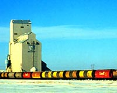

The Grain Elevator
The grain elevator, the farmer's chief link to markets around the world, is the most enduring symbol of the Canadian prairies.
The elevator is a vertical warehouse used for cleaning, weighing,
and storing grain. It is also used to unload grain from its elevator
bins into railway cars and trucks. These tall, often brightly
painted wooden or concrete towers may be seen along railway sidings
in many towns and villages across the Prairies and within easy
reach of grain farms. Saskatchewan now has about 2,300 grain elevators.
It once had over 6,000!
In the early days of the grain trade in eastern Canada and the United States, grain was stored and transported in bags. When the Canadian prairies were opened for agriculture, this system
was still in use: farmers delivered their grain in bags to warehouses located along the railroads. The same bags were shipped by rail
and boat to final markets. At every step of the way, the bags
had to be loaded and unloaded by hand.
Transportation companies soon discovered bulk grain handling was
more efficient. The railroads offered free sites and other privileges
to companies or individuals who would build bulk handling facilities,
called elevators.
The first elevators on the prairies usually had capacities of
650 to 800 tonnes.
Elevators were named for the way they work. An endless vertical
conveyor-belt with buckets (called a leg) elevates the grain from an unloading area at the bottom to a distribution
system at the top. From here, the grain is redirected, using gravity, to any one of several storage bins, or into a railway car.
Early elevators were built 11 to 16 kilometres apart;a
reasonable distance for horse-draw wagons to haul grain from nearby
farms.
The Modern Elevator
The country elevator has changed since the early days of the Canadian
West, but the changes tended to be in size, speed and efficiency,
rather than in function or importance to the community.
Elevators still exist for one purpose; to collect prairie
grain for shipment to Canadian and international markets. They
often become the economic heart of a small prairie community.
About 70 per cent of the grain grown
in Saskatchewan is spring wheat. After the wheat is harvested,
it is brought to a grain elevator to be sold. The manager of the
elevator weighs and grades the wheat and then stores it.
The farmer may not sell all his wheat to the company that owns
the elevator. Some may be kept for seed for the next year or for
feeding livestock.
In the past decade, the prairie grain-handling system has been
affected by changing economic times and technology. Older elevators
have worn out. Meanwhile, better roads and highways, and larger
trucks have made it unnecessary for new elevators to be so close
together. Many of the original prairie rail lines have been abandoned.
A growing number of high-throughput elevators now
dot the prairies. These elevators can receive large quantities
of grain from farmers, and ship it out again by rail very quickly.
The newest of these high-throughput elevators can store up to
37 000 tonnes. They are more than 37 times the size of the elevators
which first appeared on the prairies, and are equipped to handle
grain many times faster than the originals.
Many elevators can now weigh and unload even the largest semi-trailer
trucks; up to 31 metres long and weighing as much as l00 tonnes when loaded.
Major Working Elements of a Country Elevator
- Driveway and receiving area
- Elevating leg
- Telescoping head
- Distributor
- Overhead shipping scale
- Boxcar surge bin
- Hopper car surge bin
- Boxcar loading spout
- Hopper car loading spout
- Storage bin
- Boot tank
- Cleaner bin
- Grain cleaner
- Dust control unit
High-Throughput Elevators
- Office
- Driveway and receiving area
- Boot tank
- Elevating leg
- Leg head
- Distributor
- Overhead shipping scale
- Dust control unit
- Storage bin
- Hopper car surge bin
- Hopper car loading spout
- Shipping room
- Loading platform
- Hopper car
In each high-throughput elevator, two high-capacity elevating legs can receive as much as 340 tonnes per hour each. In addition,
grain can be loaded to rail cars up to 1 120 tonnes per hour;
without interrupting the receiving, cleaning or burying operations.
Today, most elevators are highly automated. Operators direct grain
movement within the structures from control panels linked to a
central computer. This results in fast and efficient accounting
for the operation.
Many of the new high-throughput elevators offer the additional
service of condominium or producer owned leased storage. These
storage facilities are jointly built by the Pool and local producers.
Local producers can invest in storage space connected directly
to the elevator. Space is usually sold in 4,000 units. Under the
terms of the purchase, producers can deliver grain against their
space and the Pool is responsible for managing the facility and
maintaining the condition of the grain until the producer notifies
the Pool of his intention to sell the grain. This new service
provides many benefits to the producer, including flexible grain
storage, increased delivery opportunities; particularly
at harvest time, reduced storage risk, increased marketing flexibility,
convenience and the potential for return on investment through
appreciation in value of the unit over time.
A Load Comes to the Elevator
When the farmer pulls the truck into the drive shed of the elevator,
the elevator operators weigh the truck. As the grain is dumped,
the operators take samples of grain and test them to determine
the quality, and how much of the load is weed seeds or other materials.
New innovations, like Mobiload, allow the farmer to test grain
right on his own land. Buying can occur direct from the farm.
After the operators know what grade of grain the farmer is delivering,
they can direct it to one of the bins.
Samples are tested to check its quality, appearance, and protein
content. The wheat is then dumped into a delivery pit. A series
of buckets on a conveyor belt lift or 'elevate' the grain from
the pit to the top of the elevator. From there, it goes through
a spout to one of the storage bins. The bins keep separate
the different grades of wheat.
Once the truck is emptied, the operators weigh it again to determine
the weight of the farmer's load.
When the wheat is ready to be shipped
out, it is sent into a loading bin called a hopper. From the hopper,
the grain goes through a grain cleaner and into the cleaner bin.
From there, it is sent to the top of the elevator through a special
spout. The spout leads to a boxcar or hopper car beside the elevator.
The wheat is shipped out by train to
many different ports; the Pacific ports of Vancouver or Prince
Rupert, the Hudson Bay port of Churchill, or to the Great Lakes
port of Thunder Bay. At the destination port the grain is unloaded
and cleaned, then dried and stored in huge terminal elevators.
Terminal elevators store the grain until it can be loaded into
ships and sent to market in
other parts of Canada, the United States or to distant ports.
|